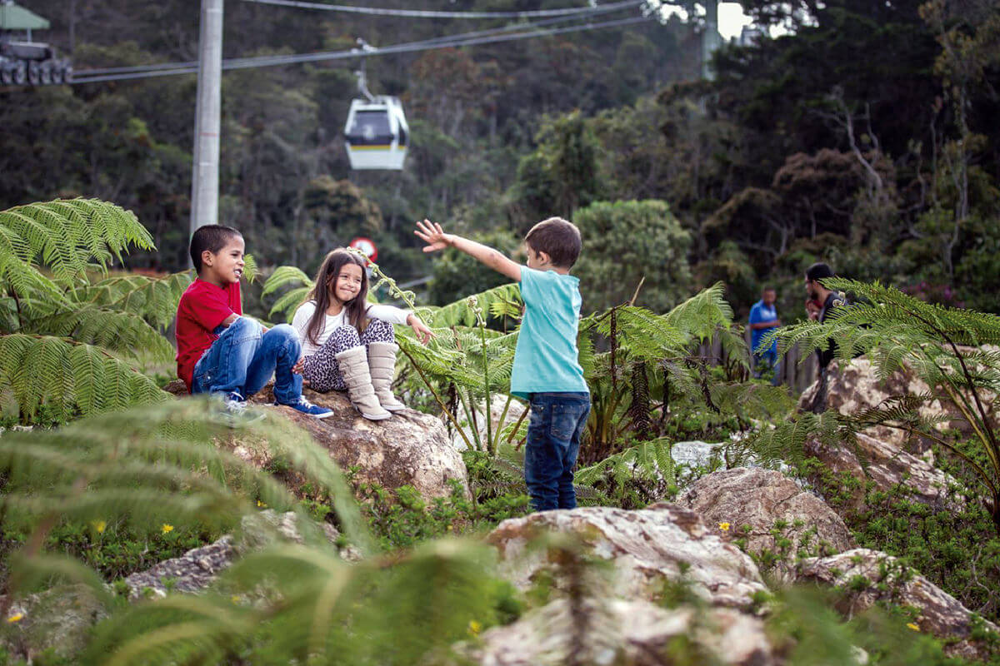
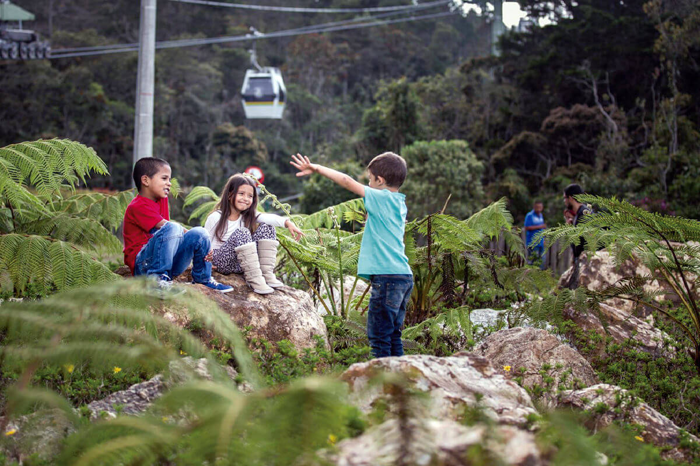

Explora La Belleza Natural De Medellin
Descubre por que los puntos verdes, parques y areas naturales son tan importantes para la ciudad de Medellin. Sumergete en la biodiversidad unica que ofrecen estos espacios y disfruta de la conexion con la naturaleza en tu vida diaria.
 
